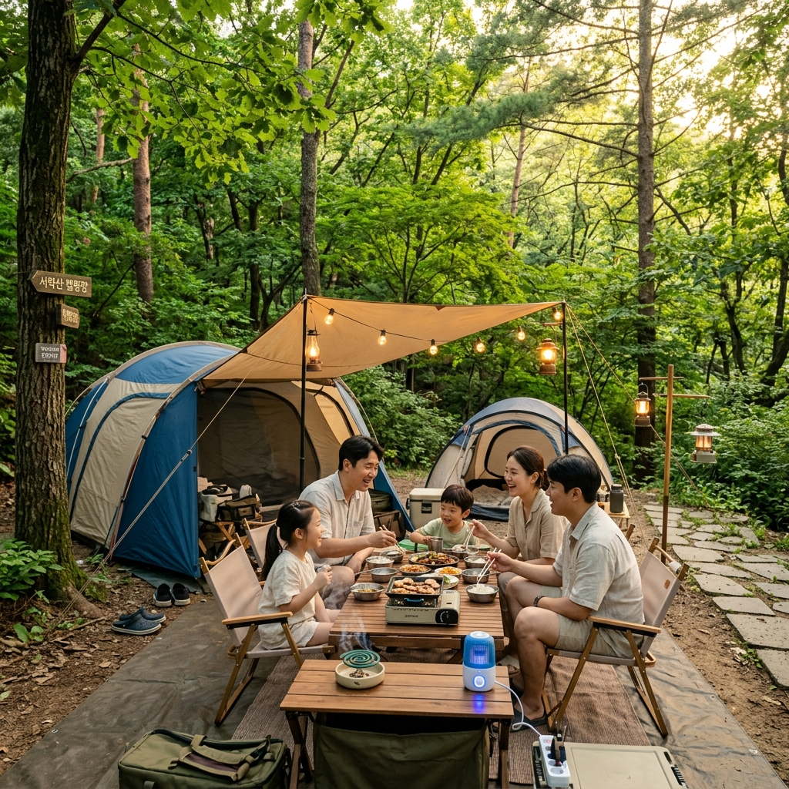
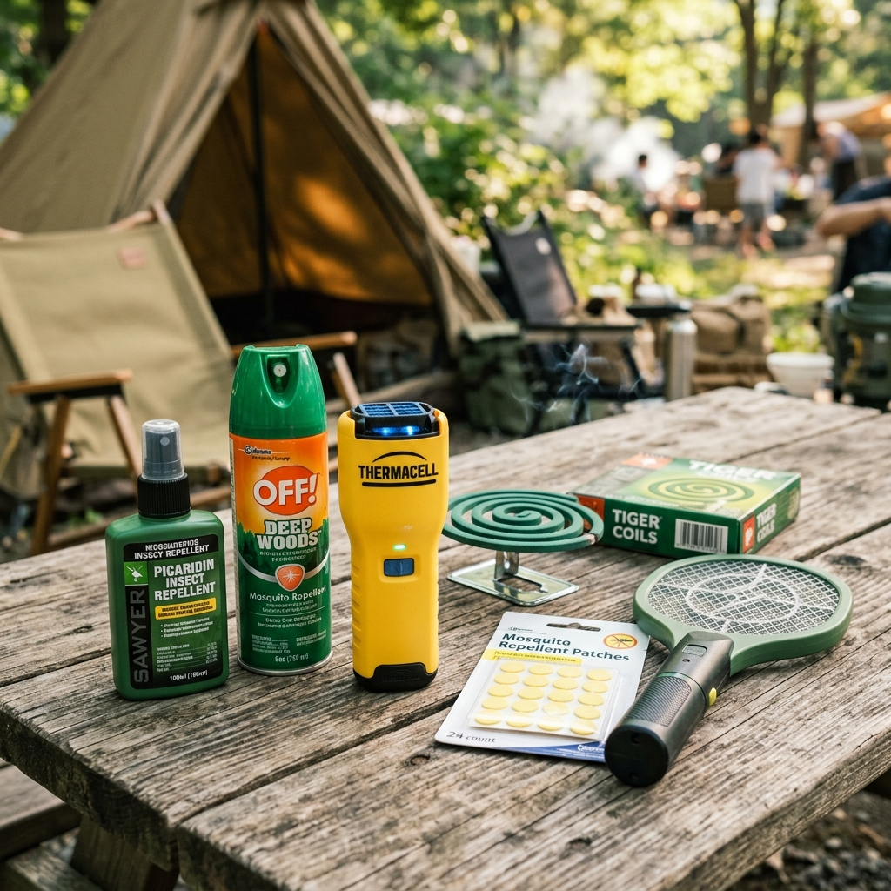
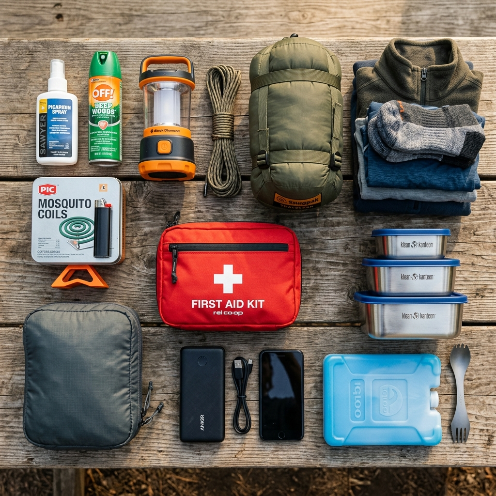

여름 캠핑 모기에 시달려봤습니다, 실제로 효과 본 퇴치법과 놓친 준비물들
✍️ 직접 겪어보니
계곡 캠핑을 몇 번 다녀오면서 모기 때문에 거의 뜬 눈으로 밤을 샌 적이 있습니다. 텐트 밖에서 한 마리를 잡아도 안에서 또 윙윙 소리가 들렸고, 새벽에 일어나 모기채를 들고 헤드랜턴 키고 모기를 잡은 경험이 몇 번 있습니다. 그 이후로 제가 직접 써보고 효과를 확인한 방법들을 정리했습니다. 한 번에 세 가지 이상을 쓸 때 비로소 '모기 없는 밤'이 가능했습니다.
01 캠핑 모기가 도시보다 무서운 이유
도시 집 안에서 만나는 모기와 캠핑장 모기는 다릅니다. 캠핑장의 숲모기는 낮에도 활동하고 움직임이 빠릅니다. 풀밭과 나무 그늘에서 기다리다가 사람이 지나가면 재빨리 달려듭니다.
특히
계곡 인근 캠핑장은 고인 물이 많아 모기 번식이 폭발적입니다. 장마가 끝난 직후(7월 중순~하순)는 웅덩이가 곳곳에 생겨 밀도가 최고조에 달합니다.
모기는 이산화탄소(날숨)와 체온, 땀 냄새에 끌립니다. 여름에 땀을 많이 흘리는 캠핑 상황이 모기를 끌어들이기 딱 좋은 조건입니다.

여름 캠핑장 모기 퇴치 설비 (이미지 제작 예정)
02 제가 직접 써보고 효과 확인한 방법 TOP 5
여러 번의 캠핑을 통해 직접 비교해 본 결과, 아래 조합이 가장 효과적이었습니다.
1위: DEET 기피제 + 이중 텐트 조합
기피제를 발목·팔뚝·목덜미에 꼼꼼히 바르고 이중 구조 텐트(메쉬 이너텐트)를 사용하자 밤 모기 민원이 90% 이상 줄었습니다. 이 두 가지만 해도 체감 차이가 큽니다.
2위: USB 충전식 훈증기
전기 없는 캠핑장에서도 보조배터리에 연결해 쓸 수 있는 USB 훈증기를 쓰기 시작하고 나서 텐트 주변 모기가 확실히 줄었습니다. 연기 없이 작동해서 냄새 민감한 분들도 사용하기 편합니다.
3위: 전기 모기채 + 자기 전 소탕
잠들기 전 텐트 안에서 전기 모기채로 10분 소탕하는 루틴을 만들었습니다. 이 루틴 하나로 수면 질이 크게 올라갔습니다.
4위: 모기 패치 (아이 동반 시)
기피제를 싫어하는 아이에게 모기 패치를 옷에 붙여주면 수 시간 효과가 있었습니다.
5위: 핸드 선풍기
식사 중 테이블 위에 핸드 선풍기를 켜두면 모기가 다가오지 못합니다. 의외로 단순하지만 효과가 확실했습니다.
03 처음 캠핑 갈 때 놓쳤던 준비물들
경험을 쌓으며 깨달은 "이걸 챙겼어야 했는데" 목록입니다.
벌레 물린 데 바르는 약: 기피제를 해도 한두 방 물리는 건 피하기 어렵습니다. 가려움을 빠르게 잡아주는 히드로코르티손 크림이나 버물리를 꼭 챙기세요.
텐트 메쉬 보수 테이프: 메쉬 창에 1cm짜리 구멍 하나만 있어도 모기가 침입합니다. 얇은 보수 테이프를 챙겨가면 현장에서 바로 막을 수 있습니다.
긴 소매·긴 바지 여분: 저녁에 기온이 내려가면서 긴 옷이 필요한데, 캠핑 와서 반팔만 갖고 왔다가 모기의 밥이 된 적이 있습니다.
모기향 거치대: 모기향을 모래나 땅에 꽂아두면 금방 쓰러지고 화재 위험도 있습니다. 철제 거치대가 필수입니다.
밝은 색 옷 한 벌: 어두운 색 옷은 모기를 더 유인한다는 연구 결과가 있습니다. 저녁용으로 밝은 색 긴 소매를 따로 챙기세요.

캠핑 모기 퇴치 제품 조합 (이미지 제작 예정)
04 캠핑장 유형별 맞춤 대책
| 캠핑 유형 |
주요 해충 |
핵심 대책 |
| 계곡 캠핑 |
숲모기·각다귀·하루살이 |
기피제 + 이중텐트 + 포충기 |
| 산속 캠핑 |
숲모기·진드기 |
진드기 기피제 + 긴 옷 필수 |
| 해변 캠핑 |
갯벌 파리·등에 |
낮 시간 긴 소매 + 그늘 타프 |
| 고원 글램핑 |
각다귀·날벌레 |
조명 최소화 + 바람 방향 이용 |
05 어린이 동반 캠핑의 특별 주의사항
아이와 함께하는 여름 캠핑에서 모기 대처는 더 세심하게 해야 합니다.
아이들은 어른보다 모기에 더 크게 반응하는 경우가 많습니다. 모기에 물린 자리가 크게 붓거나 오래가는 아이도 있으니, 물리지 않는 예방이 최선입니다.
생후 6개월 이상 영유아는 DEET-free 이카리딘 성분 기피제를 사용합니다. 이카리딘 10% 이하 제품이 영유아에게 적합합니다.
아이가 긁지 않도록 가려움증을 빠르게 가라앉히는 쿨링 패치를 충분히 챙겨가세요. 손·발·얼굴 물린 데에 붙여주면 아이가 긁는 것을 줄일 수 있습니다.
잠자리는 이중 텐트 안에 추가 모기장을 설치하면 이중 방어가 됩니다.
06 모기 적은 캠핑장 고르는 법
아무리 준비를 잘 해도 캠핑장 자체의 모기 밀도가 너무 높으면 한계가 있습니다.
능선 위·해발 높은 캠핑장: 바람이 통하는 곳은 모기가 적습니다. 계곡 바닥보다 산 중턱 이상이 훨씬 낫습니다.
고인 물 없는 곳: 캠핑장 주변 논·웅덩이·습지는 모기 발생지입니다.
넓은 잔디·자갈 사이트: 낙엽 쌓인 숲속보다 탁 트인 잔디 사이트가 벌레가 적습니다.
후기 검색: 캠핏·네이버 스마트플레이스 후기에서 "모기"를 검색하면 실제 방문자들의 모기 정도를 가늠할 수 있습니다.

여름 캠핑 출발 전 준비물 점검 (이미지 제작 예정)
07 모기 대비 여름 캠핑 준비물 체크리스트
□ DEET 기피제 (성인용, 30% 이하)
□ 이카리딘 기피제 (어린이·영유아 동반 시)
□ 모기향 + 거치대
□ USB 충전식 훈증기 + 보조배터리
□ 전기 모기채
□ 모기 패치
□ 벌레 물린 데 바르는 약 (버물리·히드로코르티손 크림)
□ 이중 구조 텐트 또는 추가 모기장
□ 긴 소매·긴 바지 여분 세트
□ 밝은 색 저녁용 옷
□ 핸드 선풍기 (식사 시 테이블 비치용)
□ 텐트 메쉬 보수 테이프
□ 쿨링 패치 (아이 동반 시)
08 여름 캠핑 성공의 핵심 — 한 가지만 믿지 말 것
캠핑에서 모기 대책의 핵심은 "단일 방어에 의존하지 않는 것"입니다. 기피제만 믿거나, 모기향만 믿거나, 텐트만 믿으면 반드시 허점이 생깁니다.
가장 효과적인 조합은
바르는 기피제(1차) + 모기향/훈증기(2차) + 이중 텐트(3차) + 전기 모기채(사후 처리)입니다.
이 네 가지를 동시에 쓰면 거의 완벽에 가까운 모기 방어가 가능합니다. 처음엔 번거롭게 느껴지지만 한 번 경험하고 나면 "이게 맞다"는 걸 바로 알 수 있습니다.
📝 작성자 메모
계곡 캠핑에서 모기에 30군데 이상 물린 이후 '다시는 이러지 말자'고 결심하고 이 글에 정리한 방법들을 하나씩 도입했습니다. 지금은 어떤 캠핑장을 가도 모기 때문에 잠 못 자는 일이 없습니다. 준비 단계에서 10분만 더 챙기면 캠핑 내내 편안합니다. 꼭 기피제는 발목까지 꼼꼼하게 바르세요 — 발목이 가장 많이 물립니다.
#여름캠핑모기
#캠핑모기퇴치
#모기기피제
#캠핑준비물
#여름캠핑
#벌레퇴치
#캠핑체크리스트
#캠핑
#생활정보
#여름생활팁